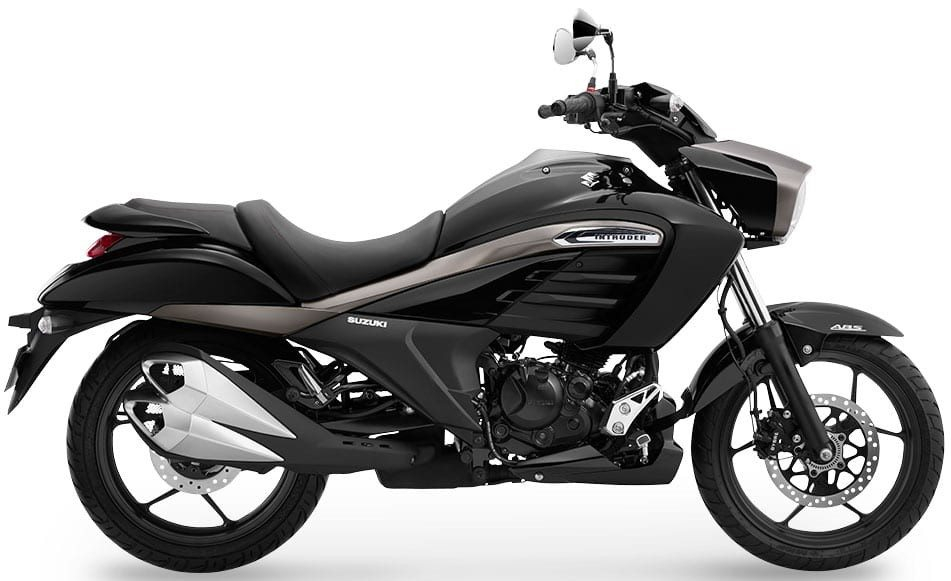

Suzuki Intruder 150 vale a pena?

Conheça a Suzuki Intruder 150
A Suzuki Intruder 150 é uma moto do estilo custom, voltada para quem busca conforto, visual clássico e uma pilotagem mais tranquila. Esse tipo de moto é ideal para uso urbano e também para pequenos passeios.
Por isso, muitas pessoas pesquisam se a Suzuki Intruder 150 vale a pena antes de comprar. O modelo se destaca por oferecer uma posição de pilotagem relaxada e um visual diferenciado em relação às motos comuns.
Com banco baixo e guidão mais alto, a Intruder proporciona uma experiência de condução confortável, principalmente para quem roda bastante na cidade.
Motor e desempenho
A Intruder 150 conta com um motor de aproximadamente 150 cilindradas, com foco em suavidade e economia.
A velocidade máxima fica em torno de 100 a 110 km/h, sendo suficiente para uso urbano e pequenas viagens.
O desempenho não é esportivo, mas atende bem quem procura uma moto confortável para o dia a dia.
Consumo de combustível
Um dos pontos positivos da Suzuki Intruder 150 é o consumo. Em média, ela faz entre 30 km/l e 40 km/l.
Isso garante um bom equilíbrio entre economia e desempenho para uso cotidiano.
Preço da Suzuki Intruder 150
O preço da Suzuki Intruder 150 pode variar dependendo da disponibilidade no mercado, mas geralmente fica na faixa de R$ 12.000 a R$ 15.000 quando considerada em mercados onde é vendida.
No mercado de usadas, é possível encontrar unidades entre R$ 7.000 e R$ 11.000.
O custo-benefício tende a ser interessante para quem busca conforto e estilo sem gastar muito.
Conforto e estilo
O grande destaque da Intruder 150 é o conforto. O banco é baixo e largo, a posição de pilotagem é relaxada e o estilo custom agrada quem gosta de motos com visual clássico.
Esse tipo de moto também costuma ser mais confortável para trajetos mais longos em comparação com motos esportivas.
Conclusão: Suzuki Intruder 150 vale a pena?
De forma geral, a resposta é que a Suzuki Intruder 150 vale a pena para quem busca uma moto confortável, econômica e com estilo diferenciado.
Ela não é feita para velocidade ou esportividade, mas entrega muito bem conforto e praticidade.
Para uso urbano e passeios tranquilos, é uma excelente escolha.
Outras notícias
Suzuki Gixxer 150 vale a pena?